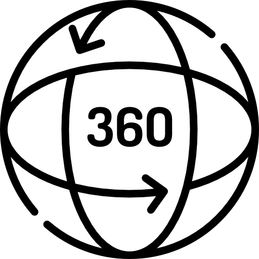

360º
Reproduce el vídeo con una experiencia inmersiva y envolvente. Siéntete como si estuvieras dentro del video.


Naturaleza, Deporte y Bienestar

Disfruta de la experiencia y sumérgete.
360º
© Copyright 2025.
Todos los derechos reservados.